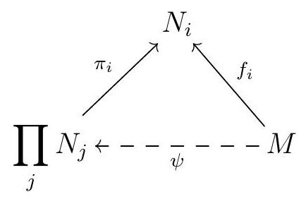
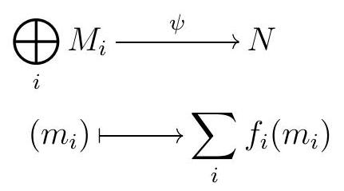
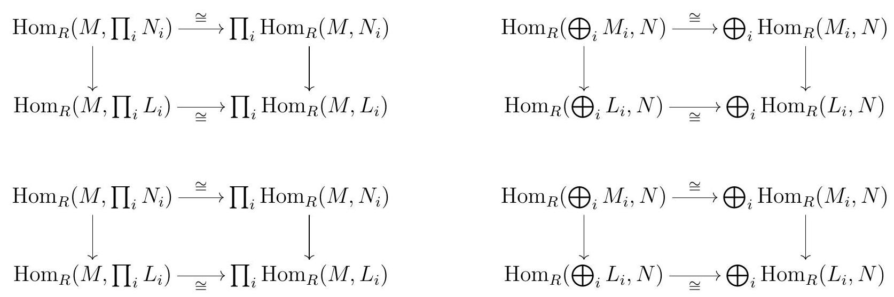
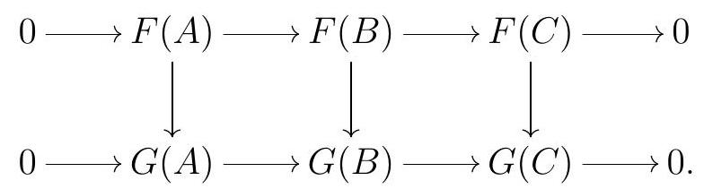
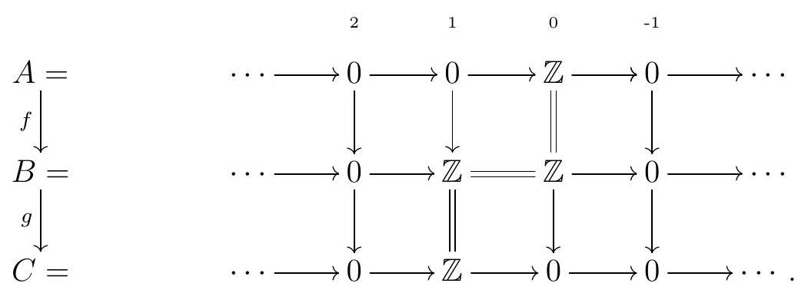

Section 3.1 \(\Hom\)
Subsection There’s No Place Like \(\Hom\)
“We shape our \(\Hom\)s and then our \(\Hom\)s shape us.”―Winston Churchill
From now on, let’s fix a ring \(R\text{.}\) Recall that whenever we say an \(R\)-module \(M\text{,}\) we mean a left \(R\)-module; any general facts about left modules can be naturally converted into statements about right \(R\)-modules, under small appropriate corrections. When \(M\) is commutative, left and right module structures agree, so the distinction is not relevant.
Our goal is to get to know the category \(R\)-Mod, which as we are about to discover is a very nice category. One of the many nice things about \(R\)-Mod is that the Hom-sets have an extra structure. (Roughly speaking, a locally small category where the Hom-sets are objects in some other category is called an enriched category).
To make the notation less heavy, we write \(\operatorname{Hom}_{R}(M, N)\) instead of \(\operatorname{Hom}_{R-\operatorname{Mod}}(M, N)\) for the Hom-set between \(M\) and \(N\) in \(R\)-Mod. The arrows in \(\operatorname{Hom}_{R}(M, N)\) are all the \(R\)-module homomorphisms from \(M\) to \(N\text{.}\) This is a locally small category, meaning that the Hom-sets are actual sets, but more even is true: the Hom-sets are actually abelian groups, and when \(R\) is commutative, they are even \(R\)-modules.
Given \(f, g \in \operatorname{Hom}_{R}(M, N), f+g\) is the \(R\)-module homomorphism defined by
\begin{equation*}
(f+g)(m):=f(m)+g(m)
\end{equation*}
When \(R\) is a commutative ring, given \(r \in R\) and \(f \in \operatorname{Hom}_{R}(M, N), r \cdot f\) is the \(R\)-module homomorphism defined by
\begin{equation*}
(r \cdot f)(m):=f(r m)
\end{equation*}
Exercise 3.1.
Let \(M\) and \(N\) be \(R\)-modules. Then \(\operatorname{Hom}_{R}(M, N)\) is an abelian group under the sum defined above.
Exercise 3.2.
Let \(M\) and \(N\) be \(R\)-modules over a commutative \(\operatorname{ring} R\text{.}\) Then \(\operatorname{Hom}_{R}(M, N)\) is an \(R\)-module.
Remark 3.3.
The main reason we need commutativity for \(\operatorname{Hom}_{R}(M, N)\) to be a module is that given any \(r \in R\) and \(f \in \operatorname{Hom}_{R}(M, N)\text{,}\) we need \(r f\) to be an \(R\)-module homomorphism, so in particular for any \(a \in M\) and any \(s \in R\) we need
\begin{equation*}
(r f)(s a)=s(r f)(a)
\end{equation*}
So
\begin{equation*}
(r s) f(a)=r f(s a)=(r f)(s a)=s(r f)(a)=s(r f(a))=(s r) f(a).
\end{equation*}
This holds whenever \(r s=s r\text{,}\) but not in general.
Some Hom-sets can easily be identified with other well-understood modules.
Exercise 3.4.
Let \(R\) be a commutative ring. Let \(M\) be an \(R\)-module, and \(I\) an ideal in \(R\text{.}\) Then we have the following isomorphisms of \(R\)-modules:
- \(\operatorname{Hom}_{R}(R, M) \cong M\text{.}\)
- \(\operatorname{Hom}_{R}\left(R^{n}, M\right) \cong M^{n}\) for any \(n \geqslant 1\text{.}\)
- \(\operatorname{Hom}_{R}(R / I, M) \cong\left(0:_{M} I\right):=\{m \in M \mid I m=0\}\text{.}\)
Subsection Additive Functors
“To split yourself in two is just about the most radical thing you can do.”―Ani DiFranco
Since \(R\)-Mod is a locally small category, we saw in Definition 1.34 that there are two Hom-functors from \(R\)-Mod to \(\Set\text{,}\) the covariant functor \(\operatorname{Hom}_{R}(M,-): R\)-Mod \(\longrightarrow\) Set and the contravariant functor \(\operatorname{Hom}_{R}(-, N): R\)-Mod \(\longrightarrow\) Set. In light of Exercise 3.2, we can upgrade these functors to land in \(\mathbf{A b}\text{,}\) or in \(R\)-Mod when \(R\) is commutative, not just in \(\Set\text{.}\) Note that while there are two Hom-functors, we will sometimes refer to the Hom functor when talking about properties that are common to both of them.
A functor that lands in \(\mathbb{R}-\bmod\text{,}\) or \(\mathbf{A b}\) in particular, can have some additional good properties.
Definition 3.5. Additive Functor.
Let \(R\) and \(S\) be rings. A functor \(T: R\)-Mod \(\longrightarrow S\)-Mod is an additive functor if
\begin{equation*}
T(f+g)=T(f)+T(g)
\end{equation*}
for all \(f, g \in \operatorname{Hom}_{R}(M, N)\text{.}\)
Note that to say that \(T\) is a covariant additive functor is to say that for all \(A\) and \(B\text{,}\) the map
\begin{equation*}
\begin{gathered}
\operatorname{Hom}(A, B) \longrightarrow \operatorname{Hom}(T(A), T(B)) \\
f \longmapsto T(f)
\end{gathered}
\end{equation*}
induced by \(T\) is a homomorphism of abelian groups. Similarly, a contravariant additive functor \(T\) is one such that
\begin{equation*}
\begin{gathered}
\operatorname{Hom}(A, B) \longrightarrow \operatorname{Hom}(T(B), T(A)) \\
f \longmapsto T(f)
\end{gathered}
\end{equation*}
is a homomorphism of abelian groups. Notice moreover that this definition makes sense more generally in any category \(\mathscr{C}\) whose objects have an abelian group structure.
Exercise 3.6. \(\Hom\) is Additive.
Show that \(\operatorname{Hom}_{R}(M,-)\) and \(\operatorname{Hom}_{R}(-, N)\) are both additive functors.
Note that in Exercise 3.6 we were purposely vague about where \(\operatorname{Hom}_{R}(M,-)\) and \(\operatorname{Hom}_{R}(-, N)\) land: these are additive functors whether we consider them as functors with target \(\mathbf{A b}\) or target \(R\)-Mod, when appropriate.
Additive functors have many nice properties.
Lemma 3.7. Properties of Additive Functors.
Let \(T: R-\) Mod \(\longrightarrow S\)-Mod be an additive functor.
- Let \(0\) denote the \(0\)-map between any two \(R\)-modules \(M\) and \(N\text{.}\) Then \(T(0)=0\) is the \(0-\operatorname{map} T(M) \rightarrow T(N)\text{.}\)
- Let \(0\) denote the zero \(R\)-module. Then \(T(0)=0\) is the zero \(S\)-module.
Proof.
- As a function defined on each fixed \(\operatorname{Hom}_{R}(M, N), T\) is a group homomorphism, so it must send \(0\) to \(0\text{.}\)
- An \(R\)-module \(M\) is the zero module if and only if the zero and identity maps on \(M\) coincide. Let \(N\) be the image of the zero \(R\)-module via \(T\text{.}\) On the one hand, any functor must send identity maps to identity maps, so the identity map on the zero module must be sent to the identity on \(N\text{.}\) On the other hand, we have shown that the zero map must be sent to the zero map on \(N\text{,}\) so the zero and identity maps on \(N\) must coincide, so \(N=0\text{.}\)
Remark 3.8.
Note that the category of chain complexes also has a similar structure to \(R\)-Mod: given two maps of complexes \(f, g: C \rightarrow D\text{,}\) we define a map of complexes \(f+g\) : \(C \rightarrow D\) given by
\begin{equation*}
(f+g)_{n}:=f_{n}+g_{n}
\end{equation*}
It is routine to check that this again gives a map of complexes, and that this operation gives the \(\Hom\)-sets in \(\operatorname{Ch}(R)\) the structure of an abelian group. In fact, this abelian group structure can be upgraded to an \(R\)-module structure when \(R\) is commutative, by setting
\begin{equation*}
(r f)_{n}:=r f_{n}
\end{equation*}
for all \(r \in R\text{.}\) This allows us to talk about additive functors to and from the category \(\operatorname{Ch}(R)\text{,}\) and there is a version of Lemma 3.7 in \(\mathrm{Ch}(R)\text{.}\)
Exercise 3.9. Homology is Additive.
Show that homology is an additive functor.
Most functors between categories or modules or chain complexes are additive. In fact, we will spend the rest of this chapter studying three very important additive functors: the two \(\Hom\) functors, and a third functor we have yet to define.
Exercise 3.10. Additive Functors Preserve Direct Sums.
Let \(R\) and \(S\) be rings and let \(T: R\)-Mod \(\longrightarrow S\)-Mod be an additive functor. Show that for all \(R\)-modules \(A\) and \(B\text{,}\)
\begin{equation*}
T(A \oplus B) \cong T(A) \oplus T(B)
\end{equation*}
\(\Hom\) satisfies a stronger version of this property.
Theorem 3.11.
For all \(R\)-modules \(M, N, M_{i}, N_{i}\text{,}\) there are isomorphisms of abelian groups
\begin{equation*}
\operatorname{Hom}_{R}\left(M, \prod_{i} N_{i}\right) \cong \prod_{i} \operatorname{Hom}_{R}\left(M, N_{i}\right) \text { and } \operatorname{Hom}_{R}\left(\bigoplus_{i} M_{i}, N\right) \cong \prod_{i} \operatorname{Hom}_{R}\left(M_{i}, N\right)
\end{equation*}
Moreover, when \(R\) is commutative, these are in fact isomorphisms of \(R\)-modules.
In particular,
\begin{equation*}
\operatorname{Hom}_{R}(A \oplus B, C) \cong \operatorname{Hom}_{R}(A, C) \oplus \operatorname{Hom}_{R}(B, C)
\end{equation*}
and
\begin{equation*}
\operatorname{Hom}_{R}(A, B \oplus C) \cong \operatorname{Hom}_{R}(A, B) \oplus \operatorname{Hom}_{R}(A, C) .
\end{equation*}
Proof.
For each \(i\text{,}\) let \(\pi_{i}: \prod_{j} N_{j} \longrightarrow N_{i}\) be the canonical projection map. Consider the map
\begin{equation*}
\begin{gathered}
\operatorname{Hom}_{R}\left(M, \prod_{i} N_{i}\right) \stackrel{\alpha}{\longrightarrow} \prod_{i} \operatorname{Hom}_{R}\left(M, N_{i}\right) \\
f \longmapsto\left(\pi_{i} f\right)
\end{gathered}
\end{equation*}
We claim this map is the desired isomorphism. We leave it as an exercise to show that \(\alpha\) is a homomorphism of abelian groups, and a homomorphism of \(R\)-modules when \(R\) is commutative; we focus on proving that \(\alpha\) is a bijection. First, take \(\left(f_{i}\right)_{i} \in \prod_{i} \operatorname{Hom}_{R}\left(M, N_{i}\right)\text{.}\) Define a map
\begin{equation*}
\begin{aligned}
& M \stackrel{\psi}{\longrightarrow} \prod_{i} N_{i} \\
& m \longmapsto\left(f_{i}(m)\right)
\end{aligned}
\end{equation*}
This makes the diagram

commute, so that \(\alpha(\psi)=\left(\pi_{i} \psi\right)_{i}=\left(f_{i}\right)\text{.}\) This shows that \(\alpha\) us surjective. Now let us show that \(\alpha\) is injective. Suppose \(f \in \operatorname{Hom}_{R}\left(M, \prod_{i} N_{i}\right)\) is such that \(\alpha(f)=0\text{.}\) For each \(m \in M\text{,}\) let \(f(m)=\left(n_{i}\right)_{i}\text{,}\) so \(\pi_{i} f(m)=n_{i}\text{.}\) By assumption, \(\left(\pi_{i} f(m)\right)=0\text{,}\) which means that \(\pi_{i} \alpha=0\) for all \(i\text{,}\) and thus \(n_{i}=0\) for all \(i\text{.}\) So \(f=0\text{.}\) We conclude that \(\alpha\) is an isomorphism.
Now consider the map
\begin{equation*}
\begin{gathered}
\operatorname{Hom}_{R}\left(\bigoplus_{i} M_{i}, N\right) \stackrel{\beta}{\longrightarrow} \prod_{i} \operatorname{Hom}_{R}\left(M_{i}, N\right) \\
f \longmapsto\left(f \iota_{i}\right)
\end{gathered}
\end{equation*}
where \(\iota_{j}: M_{j} \longrightarrow \bigoplus_{i} M_{i}\) is the inclusion of the \(j\) th factor. We leave it as an exercise to prove that \(\beta\) is a homomorphism of abelian groups, and that whenever \(R\) is commutative, \(\beta\) is in fact a homomorphism of \(R\)-modules.
Given \(\left(f_{i}\right)_{i} \in \prod_{i} \operatorname{Hom}_{R}\left(M_{i}, N\right)\text{,}\) let

Then \(\beta(\psi)=\left(\psi \iota_{i}\right)_{i}\text{,}\) so for each \(i\) and each \(m_{i} \in M_{i}, \psi \iota_{i}\left(m_{i}\right)=f_{i}\left(m_{i}\right)\text{,}\) and \(\beta(\psi)=\left(f_{i}\right)_{i}\text{.}\) This shows that \(\beta\) is surjective.
Now assume \(\beta(f)=0\text{,}\) which implies that \(f \iota_{i}\) is the zero map for each \(i\text{.}\) Consider any \(\left(m_{i}\right)_{i} \in \bigoplus_{i} M_{i}\text{.}\) For each \(i, f \iota_{i}\left(m_{i}\right)=0\text{.}\) On the other hand, \(\left(m_{i}\right)_{i}=\sum_{i} \iota_{i}\left(m_{i}\right)\text{,}\) so \(f\left(\left(m_{i}\right)_{i}\right)=\sum_{i} \iota_{i}\left(m_{i}\right)=0\text{.}\) We conclude that \(f=0\text{,}\) and \(\beta\) is injective.
These two properties, however, are consequences of Exercise 3.6 and Exercise 3.10: \(\Hom\) is additive, and additive functors preserve finite direct sums.
Exercise 3.12.
Show that the isomorphisms in Theorem 3.11 are natural on both components. More precisely, given any other family of \(R\)-modules \(L_{i}\) such that for each \(i\) there exists \(j\text{,}\) a map \(\sigma_{i j}\) there exist \(R\)-module maps making the following diagrams commute:

In fact, one can show that more generally, \(\Hom\) behaves well with limits and colimits.
Exercise 3.13.
Let \(R\) be any ring and consider \(R\)-modules \(A\) and \(\left\{M_{i}\right\}\text{.}\)
- For any inverse system \(\left\{M_{i}\right\}\text{,}\) there is a natural isomorphism\begin{equation*} \operatorname{Hom}_{R}\left(A, \lim _{i} M_{i}\right) \cong \lim _{i} \operatorname{Hom}_{R}\left(A, M_{i}\right) \end{equation*}
- For any direct system \(\left\{M_{i}\right\}\) or \(R\)-modules, there is a natural isomorphism\begin{equation*} \operatorname{Hom}_{R}\left(\operatorname{colim}_{i} M_{i}, A\right) \cong \lim _{i} \operatorname{Hom}_{R}\left(M_{i}, B\right) \end{equation*}
Moreover, when \(R\) is commutative, these are isomorphisms of modules.
Subsection Exact Functors
“My biggest problem is retaining the exact information.”―David Cross
Another important property of \(\Hom\) is how it interacts with exact sequences. First, an important note about general additive functors:
Remark 3.14.
Let \(F: R\)-Mod \(\rightarrow S\)-Mod be an additive functor. Thanks to Lemma 3.7, if \(g f=0\text{,}\) then
\begin{equation*}
F(g f)=F(g) F(f)=F(0)=0.
\end{equation*}
Thus \(F\) must send complexes to complexes, and in fact, \(F\) induces a functor \(\operatorname{Ch}(R) \rightarrow \operatorname{Ch}(S)\text{,}\) which we also call \(F\text{.}\) Now if \(h\) is a homotopy between two maps of complexes, \(F\) must preserve the identities
\begin{equation*}
\delta_{n+1} h_{n}+h_{n-1} \delta_{n}=f_{n}-g_{n}
\end{equation*}
for all \(n\text{,}\) so \(F(h)\) is a homotopy between \(F(f)\) and \(F(g)\text{.}\)
While additive functors send complexes to complexes, they don’t have to preserve exactness. Functors that do preserve exactness are very special.
Definition 3.15. Exact Functors.
An additive functor \(T: R\)-Mod \(\longrightarrow S\)-Mod is an exact functor if it preserves short exact sequences. When \(T\) is covariant, this means that every short exact sequence
\begin{equation*}
0 \longrightarrow A \stackrel{f}{\longrightarrow} B \stackrel{g}{\longrightarrow} C \longrightarrow 0
\end{equation*}
is taken to the short exact sequence
\begin{equation*}
0 \longrightarrow T(A) \stackrel{T(f)}{\longrightarrow} T(B) \stackrel{T(g)}{\longrightarrow} T(C) \longrightarrow 0
\end{equation*}
When \(T\) is contravariant, this means that any short exact sequence
\begin{equation*}
0 \longrightarrow A \stackrel{f}{\longrightarrow} B \stackrel{g}{\longrightarrow} C \longrightarrow 0
\end{equation*}
is taken to the short exact sequence
\begin{equation*}
0 \longrightarrow T(C) \stackrel{T(g)}{\longrightarrow} T(B) \stackrel{T(f)}{\longrightarrow} T(A) \longrightarrow 0
\end{equation*}
Exercise 3.16. Functors are Exact iff They Commute with Homology.
Show that an additive functor \(T\) is exact if it commutes with homology, that is, for all complexes \(C\) and all \(n\text{,}\)
\begin{equation*}
\mathrm{H}_{n}(T(C))=T\left(\mathrm{H}_{n}(C)\right)
\end{equation*}
As we will soon see, most functors are not exact. However, many functors of interest preserve some exactness.
Definition 3.17. Left and Right Exact Functors.
A covariant additive functor \(T: R\)-Mod \(\longrightarrow S\)-Mod is left exact if it takes every exact sequence
\begin{equation*}
0 \longrightarrow A \stackrel{f}{\longrightarrow} B \stackrel{g}{\longrightarrow} C
\end{equation*}
of \(R\)-modules to the exact sequence
\begin{equation*}
0 \longrightarrow T(A) \stackrel{T(f)}{\longrightarrow} T(B) \stackrel{T(g)}{\longrightarrow} T(C)
\end{equation*}
of \(S\)-modules, and right exact if it takes every exact sequence of \(R\)-modules
\begin{equation*}
A \stackrel{f}{\longrightarrow} B \stackrel{g}{\longrightarrow} C \longrightarrow 0
\end{equation*}
to the exact sequence of \(S\)-modules
\begin{equation*}
T(A) \stackrel{T(f)}{\longrightarrow} T(B) \stackrel{T(g)}{\longrightarrow} T(C) \longrightarrow 0 .
\end{equation*}
Definition 3.18. Left and Right Exact Functors.
A contravariant additive functor \(T: R\)-Mod \(\longrightarrow S\)-Mod is left exact if it takes every exact sequence
\begin{equation*}
A \stackrel{f}{\longrightarrow} B \stackrel{g}{\longrightarrow} C \longrightarrow 0
\end{equation*}
of \(R\)-modules to the exact sequence
\begin{equation*}
0 \longrightarrow T(C) \stackrel{T(g)}{\longrightarrow} T(B) \stackrel{T(f)}{\longrightarrow} T(A)
\end{equation*}
of \(S\)-modules, and right exact if it takes every exact sequence of \(R\)-modules
\begin{equation*}
0 \longrightarrow A \stackrel{f}{\longrightarrow} B \stackrel{g}{\longrightarrow} C
\end{equation*}
to the exact sequence of \(S\)-modules
\begin{equation*}
T(C) \stackrel{T(g)}{\longrightarrow} T(B) \stackrel{T(f)}{\longrightarrow} T(A) \longrightarrow 0 .
\end{equation*}
Exercise 3.19. Exactness and SESs.
The definitions above all stay unchanged if for each condition we start with a short exact sequence. For example, a covariant additive functor \(T\) is left exact if and only if for every short exact sequence
\begin{equation*}
0 \longrightarrow A \stackrel{f}{\longrightarrow} B \stackrel{g}{\longrightarrow} C \longrightarrow 0
\end{equation*}
of \(R\)-modules,
\begin{equation*}
0 \longrightarrow T(A) \stackrel{T(f)}{\longrightarrow} T(B) \stackrel{T(g)}{\longrightarrow} T(C)
\end{equation*}
is exact.
Remark 3.20.
Left exact covariant functors take kernels to kernels, while right exact covariant functors take cokernels to cokernels: the kernel of \(f\) fits in an exact sequence
\begin{equation*}
0 \longrightarrow \operatorname{ker} f \longrightarrow A \stackrel{f}{\longrightarrow} B
\end{equation*}
and applying a left exact functor \(F\) gives us an exact sequence
\begin{equation*}
0 \longrightarrow F(\operatorname{ker} f) \longrightarrow F(A) \stackrel{F(f)}{\longrightarrow} F(B)
\end{equation*}
Exactness tells us that \(F(\operatorname{ker} f)\) is the kernel of \(F(f)\text{.}\)
Similarly, the cokernel of \(f\) fits into an exact sequence
\begin{equation*}
A \stackrel{f}{\longrightarrow} B \longrightarrow \operatorname{coker} f \longrightarrow 0
\end{equation*}
which any right exact functor \(G\) will take to an exact sequence
\begin{equation*}
G(A) \stackrel{G(f)}{\longrightarrow} G(B) \longrightarrow G(\operatorname{coker} f) \longrightarrow 0
\end{equation*}
Exactness says that \(G(\operatorname{coker} f)\) is the cokernel of \(G(f)\text{.}\)
Similarly, left exact contravariant functors take cokernels to kernels, and right exact contravariant functors take kernels to cokernels. A left exact contravariant functor \(F\) will take the exact sequence
\begin{equation*}
A \stackrel{f}{\longrightarrow} B \longrightarrow \operatorname{coker} f \longrightarrow 0
\end{equation*}
to an exact sequence
\begin{equation*}
0 \longrightarrow F(\operatorname{coker} f) \longrightarrow F(B) \stackrel{F(f)}{\longrightarrow} F(A)
\end{equation*}
and exactness tells us that \(F(\operatorname{coker} f)\) is the kernel of \(F(f)\text{.}\)
A right exact contravariant functor \(G\) will take the exact sequence
\begin{equation*}
0 \longrightarrow \operatorname{ker} f \longrightarrow A \stackrel{f}{\longrightarrow} B
\end{equation*}
to the exact sequence
\begin{equation*}
G(B) \stackrel{G(f)}{\longrightarrow} G(A) \longrightarrow G(\operatorname{ker} f) \longrightarrow 0
\end{equation*}
and exactness says that \(G(\operatorname{ker} f)\) is the cokernel of \(G(f)\text{.}\)
Exactness is preserved by natural isomorphisms.
Remark 3.21.
Suppose that \(F, G: R\)-Mod \(\longrightarrow S\)-Mod are naturally isomorphic additive functors. We claim that \(F\) is exact if and only if \(G\) is exact. Let’s prove it in the case when \(F\) and \(G\) are covariant. Given any short exact sequence
\begin{equation*}
0 \longrightarrow A \longrightarrow B \longrightarrow C \longrightarrow 0
\end{equation*}
applying each of our functors yields complexes of \(R\)-modules which may or may not be exact. Our natural isomorphism gives us an isomorphism of complexes

Isomorphisms of complexes induce isomorphisms in homology, so the top sequence is exact if and only if the bottom sequence is exact. Thus \(F\) preserves the short exact sequence if and only if \(G\) does.
A similar argument shows that \(F\) is left (respectively, right) exact if and only if \(G\) is left (respectively, right) exact; we leave the details as an exercise.
However, an additive functor does not have to be left exact nor right exact. There are even some functors that preserve exactness in the middle.
Example 3.22. Homology is Exact in the Middle.
The homology functor is exact in the middle: given a short exact sequence
\begin{equation*}
0 \longrightarrow A \stackrel{f}{\longrightarrow} B \stackrel{g}{\longrightarrow} C \longrightarrow 0
\end{equation*}
the exactness of the long exact sequence in homology says in particular that
\begin{equation*}
\mathrm{H}_{n}(A) \stackrel{\mathrm{H}_{n}(f)}{\longrightarrow} \mathrm{H}_{n}(B) \stackrel{\mathrm{H}_{n}(g)}{\longrightarrow} \mathrm{H}_{n}(C)
\end{equation*}
is exact for all \(n\text{.}\) On the other hand, we claim that the homology functor is neither left exact nor right exact. More precisely, \(\mathrm{H}_{n}(f)\) might fail to be injective and \(\mathrm{H}_{n}(g)\) might fail to be surjective. Finding a counterexample amounts to finding a short exact sequence of complexes such that the connecting homomorphism in the long exact sequence in homology is not the zero map.
For example, consider the following complexes and maps of complexes:

Applying \(\mathrm{H}_{0}\) gives us
\begin{equation*}
\begin{gathered}
\mathrm{H}_{0}(A) \stackrel{\mathrm{H}_{0}(f)}{\longrightarrow} \mathrm{H}_{0}(B) \\
\mathbb{Z} \stackrel{0}{\longrightarrow} 0
\end{gathered}
\end{equation*}
which is not injective, so
\begin{equation*}
0 \longrightarrow \mathrm{H}_{0}(A) \stackrel{\mathrm{H}_{0}(f)}{\longrightarrow} \mathrm{H}_{0}(B) \stackrel{\mathrm{H}_{0}(g)}{\longrightarrow} \mathrm{H}_{0}(C)
\end{equation*}
is not exact. Similarly, applying \(\mathrm{H}_{1}\) gives
\begin{equation*}
\begin{gathered}
\mathrm{H}_{1}(B) \stackrel{\mathrm{H}_{1}(g)}{\longrightarrow} \mathrm{H}_{1}(C) \\
0 \stackrel{0}{\longrightarrow} \mathbb{Z}
\end{gathered}
\end{equation*}
which is not surjective, so
\begin{equation*}
\mathrm{H}_{1}(A) \stackrel{\mathrm{H}_{1}(f)}{\longrightarrow} \mathrm{H}_{1}(B) \stackrel{\mathrm{H}_{1}(g)}{\longrightarrow} \mathrm{H}_{1}(C) \longrightarrow 0
\end{equation*}
is not exact. Thus homology is neither left exact nor right exact, though it is exact in the middle.
But in general, an additive functor might fail to preserve exactness even in the middle.
Example 3.23.
Fix a prime \(p\) and consider the functor \(F: \mathbf{A b} \rightarrow \mathbf{A b}\) which on objects is defined by
\begin{equation*}
F(M)=\operatorname{Hom}_{\mathbb{Z}}\left(\mathbb{Z} / p, M / p^{2} M\right)
\end{equation*}
given a homomorphism of abelian groups \(f: M \rightarrow N\text{,}\) we get an induced homomorphism of abelian groups
\begin{equation*}
\begin{gathered}
M / p^{2} M \stackrel{\bar{f}}{\longrightarrow} N / p^{2} N \\
m+p^{2} M \longmapsto f(m)+p^{2} N
\end{gathered}
\end{equation*}
and \(F(f)=\bar{f} \circ-\) is postcomposition with \(\bar{f}\text{.}\) Consider the short exact sequence
\begin{equation*}
0 \longrightarrow \mathbb{Z} / p^{2} \stackrel{f}{\longrightarrow} \mathbb{Z} / p^{3} \stackrel{g}{\longrightarrow} \mathbb{Z} / p \longrightarrow 0
\end{equation*}
where \(f\) is the multiplication by \(p\) map, which sends \(1 \mapsto p\text{,}\) and \(g\) is the canonical quotient map by the subgroup generated by \(p\text{.}\)
Note that
\begin{equation*}
F\left(\mathbb{Z} / p^{2}\right)=\operatorname{Hom}_{\mathbb{Z}}\left(\mathbb{Z} / p, \mathbb{Z} / p^{2}\right)
\end{equation*}
is the submodule of \(\mathbb{Z} / p^{2}\) of elements killed by \(p\text{,}\) which is generated by the class of \(p\text{,}\) so \(F\left(\mathbb{Z} / p^{2}\right)=\mathbb{Z} / p\text{.}\) Moreover,
\begin{equation*}
\frac{\mathbb{Z} / p^{3}}{p^{2} \mathbb{Z} / p^{3}} \cong \mathbb{Z} / p^{2}
\end{equation*}
so \(F\left(\mathbb{Z} / p^{3}\right)\) is the the submodule of \(\mathbb{Z} / p^{2}\) of elements killed by \(p\text{,}\) which is generated by \(p\) and isomorphic to \(\mathbb{Z} / p\text{,}\) so \(F\left(\mathbb{Z} / p^{3}\right)=\mathbb{Z} / p\text{.}\) Now
\begin{equation*}
F(f): \mathbb{Z} / p \rightarrow \mathbb{Z} / p
\end{equation*}
is the map induced by multiplication by \(p\text{,}\) so it is the zero map. The map
\begin{equation*}
\bar{g}: \mathbb{Z} / p^{2} \rightarrow \mathbb{Z} / p
\end{equation*}
is the canonical quotient by the subgroup generated by \(p\text{;}\) any element in
\begin{equation*}
F\left(Z / p^{3}\right)=\operatorname{Hom}_{\mathbb{Z}}\left(\mathbb{Z} / p, \mathbb{Z} / p^{2}\right)
\end{equation*}
corresponds to choosing an element of order \(p\text{,}\) and thus in the subgroup generated by \(p\text{,}\) so applying \(\bar{g}\) always results in \(0\text{.}\) We conclude that \(F(g)=0\text{.}\) Finally, this shows that applying \(F\) to the original short exact sequence gives us the complex
\begin{equation*}
0 \longrightarrow \mathbb{Z} / p \stackrel{0}{\longrightarrow} \mathbb{Z} / p \stackrel{0}{\longrightarrow} \mathbb{Z} / p \longrightarrow 0
\end{equation*}
which is not exact anywhere.
One amazing fact, however, is that even if a functor is not exact, it must always preserve split short exact sequences.
Exercise 3.24. Additive Functors Preserve Split Exact Sequences.
Show that additive functors preserve split short exact sequences.
Subsection \(\Hom\) is Left Exact
“One should always aim at being interesting, rather than exact.”―Voltaire
We are now ready for our first important example of a left exact functor: \(\Hom\) is left exact.
Theorem 3.25. \(\Hom\) is Left Exact.
Let \(M\) be an R-module.
- The covariant functor \(\operatorname{Hom}_{R}(M,-)\) is left exact: for every exact sequence\begin{equation*} 0 \longrightarrow A \stackrel{f}{\longrightarrow} B \stackrel{g}{\longrightarrow} C \end{equation*}of \(R\)-modules, the sequence\begin{equation*} 0 \longrightarrow \operatorname{Hom}_{R}(M, A) \stackrel{\operatorname{Hom}_{R}(M, f)}{\longrightarrow} \operatorname{Hom}_{R}(M, B) \stackrel{\operatorname{Hom}_{R}(M, g)}{\longrightarrow} \operatorname{Hom}_{R}(M, C) \end{equation*}is exact.
- The contravariant functor \(\operatorname{Hom}_{R}(-, M)\) is left exact: for every exact sequence\begin{equation*} A \stackrel{f}{\longrightarrow} B \stackrel{g}{\longrightarrow} C \longrightarrow 0 \end{equation*}of \(R\)-modules, the sequence\begin{equation*} 0 \longrightarrow \operatorname{Hom}_{R}(C, M) \stackrel{\operatorname{Hom}_{R}(g, M)}{\longrightarrow} \operatorname{Hom}_{R}(B, M) \stackrel{\operatorname{Hom}_{R}(f, M)}{\longrightarrow} \operatorname{Hom}_{R}(A, M) \end{equation*}is exact.
Proof.
To make the notation less heavy, we will write
\begin{equation*}
f_{*}:=\operatorname{Hom}_{R}(M, f) \quad \text { and } \quad g_{*}:=\operatorname{Hom}_{R}(M, g)
\end{equation*}
and similarly
\begin{equation*}
f^{*}:=\operatorname{Hom}_{R}(f, M) \quad \text { and } \quad g^{*}:=\operatorname{Hom}_{R}(g, M) \text {. }
\end{equation*}
Since additive functors send complexes to complexes, as outlined in Remark 3.14, we at least know that
\begin{equation*}
0 \longrightarrow \operatorname{Hom}_{R}(M, A) \stackrel{\operatorname{Hom}_{R}(M, f)}{\longrightarrow} \operatorname{Hom}_{R}(M, B) \stackrel{\operatorname{Hom}_{R}(M, g)}{\longrightarrow} \operatorname{Hom}_{R}(M, C)
\end{equation*}
and
\begin{equation*}
0 \longrightarrow \operatorname{Hom}_{R}(C, M) \stackrel{\operatorname{Hom}_{R}(g, M)}{\longrightarrow} \operatorname{Hom}_{R}(B, M) \stackrel{\operatorname{Hom}_{R}(f, M)}{\longrightarrow} \operatorname{Hom}_{R}(A, M)
\end{equation*}
are functors, so in particular
\begin{equation*}
g_{*} f_{*}=0 \Longrightarrow \operatorname{im} f_{*} \subseteq \operatorname{ker} g_{*}
\end{equation*}
and
\begin{equation*}
f^{*} g^{*}=0 \Longrightarrow \operatorname{im} g^{*} \subseteq \operatorname{ker} f^{*}
\end{equation*}
- We have two things to show:
-
\(\underline{f_{*} \text { is injective: }}\).Suppose that \(h \in \operatorname{Hom}_{R}(M, A)\) is such that \(f_{*}(h)=0\text{.}\) By definition, this means that \(f h=0\text{.}\) But \(f\) is injective, so for any \(m \in M\)\begin{equation*} f h(m)=0 \Longrightarrow h(m)=0 \text {. } \end{equation*}We conclude that \(h=0\text{,}\) and \(f_{*}\) is injective.
-
\(\underline{\operatorname{ker} g_{*} \subseteq \operatorname{im} f_{*}:}\).Let \(h \in \operatorname{Hom}_{R}(M, B)\) be in the kernel of \(g_{*}\text{.}\) Then \(g h=g_{*}(h)=0\text{,}\) so for each \(m \in M\text{,}\) \(g h(m)=0\text{.}\) Then \(h(m) \in \operatorname{ker} g=\operatorname{im} f\text{,}\) so there exists \(a \in A\) such that \(f(a)=h(m)\text{.}\) Since \(f\) is injective, this element \(a\) is unique for each \(m \in M\text{.}\) So setting \(k(m):=a\) gives us a well-defined function \(k: M \longrightarrow A\text{.}\)We claim that \(k\) is in fact an \(R\)-module homomorphism. To see that, notice that if \(k\left(m_{1}\right)=a_{1}\) and \(k\left(m_{2}\right)=a_{2}\text{,}\) then\begin{equation*} f\left(a_{1}+a_{2}\right)=f\left(a_{1}\right)+f\left(a_{2}\right)=h\left(m_{1}\right)+h\left(m_{2}\right)=h\left(m_{1}+m_{2}\right) \end{equation*}so that \(k\left(m_{1}+m_{2}\right)=a_{1}+a_{2}=k\left(m_{1}\right)+k\left(m_{2}\right)\text{.}\)Similarly, given any \(r \in R\text{,}\)\begin{equation*} f\left(r a_{1}\right)=r f\left(a_{1}\right)=r h\left(m_{1}\right)=h\left(r m_{1}\right) \end{equation*}so \(k\left(r m_{1}\right)=r a_{1}=r k\left(m_{1}\right)\text{.}\) Finally, this element \(k \in \operatorname{Hom}_{R}(M, A)\) satisfies\begin{equation*} f_{*}(k)(m)=f(k(m))=h(m) \end{equation*}for all \(m \in M\text{,}\) so \(f_{*}(k)=h\) and \(h \in \operatorname{im} f_{*}\text{.}\)
-
\(\underline{f_{*} \text { is injective: }}\).
- Again, we have two things to show:
-
\(g^{*}\) is injective:.If \(g^{*}(h)=0\) for some \(h \in \operatorname{Hom}_{R}(C, M)\text{,}\) then \(h g=g^{*}(h)=0\text{.}\) Consider any \(c \in C\text{.}\) Since \(g\) is surjective, there exists \(b \in B\) such that \(g(b)=c\text{.}\) Then \(h(c)=h g(b)=0\text{,}\) so \(h=0\text{.}\)
-
\(\underline{\operatorname{ker} f^{*} \subseteq \operatorname{im} g^{*}:}\).Let \(h \in \operatorname{Hom}_{R}(B, M)\) be in \(\ker f^{*}\text{,}\) so that \(h f=0\text{.}\) Given any \(c \in C\text{,}\) there exists \(b \in B\) such that \(g(b)=c\text{,}\) since \(g\) is surjective. Let \(k: C \longrightarrow M\) be the function defined by \(k(c):=h(b)\) for some \(b\) with \(g(b)=c\text{.}\) This function is well-defined, since whenever \(g\left(b^{\prime}\right)=g(b)=c, b-b^{\prime} \in \operatorname{ker} g=\operatorname{im} f\text{,}\) say \(b-b^{\prime}=f(a)\text{,}\) and thus \(h\left(b-b^{\prime}\right)=h(f(a))=0\text{.}\) Moreover, we claim that \(k\) is indeed a homomorphism of \(R\)-modules. If \(c_{1}, c_{2} \in C\text{,}\) and \(g\left(b_{1}\right)=c_{1}, g\left(b_{2}\right)=c_{2}\text{,}\) then \(g\left(b_{1}+b_{2}\right)=c_{1}+c_{2}\text{,}\) so\begin{equation*} k\left(c_{1}+c_{2}\right)=h\left(b_{1}+b_{2}\right)=h\left(b_{1}\right)+h\left(b_{2}\right)=k\left(b_{1}\right)+k\left(b_{2}\right) \end{equation*}Finally, this element \(k \in \operatorname{Hom}_{R}(C, M)\) is such that \(g^{*}(k)\) satisfies\begin{equation*} \left(g_{*}(k)\right)(b)=k(g(b))=h(b) \end{equation*}for all \(b \in B\text{,}\) so \(g^{*}(k)=h\text{,}\) and \(h \in \operatorname{im} g^{*}\text{.}\)
-
\(g^{*}\) is injective:.
So \(\operatorname{Hom}_{R}(M,-)\) preserves kernels, and \(\operatorname{Hom}_{R}(-, N)\) sends cokernels to kernels.
However, \(\Hom\) is not right exact in general.
Example 3.26.
Consider the short exact sequence of abelian groups
\begin{equation*}
0 \longrightarrow \mathbb{Z} \longrightarrow \mathbb{Q} \longrightarrow \mathbb{Q} / \mathbb{Z} \longrightarrow 0
\end{equation*}
where the first map is the inclusion of \(\mathbb{Z}\) into \(\mathbb{Q}\text{,}\) and the second map is the canonical projection. The elements in the abelian group \(\mathbb{Q} / \mathbb{Z}\) are cosets of the form \(\frac{p}{q}+\mathbb{Z}\text{,}\) where \(\frac{p}{q} \in \mathbb{Q}\text{,}\) and whenever \(\frac{p}{q} \in \mathbb{Z}, \frac{p}{q}+\mathbb{Z}=0\text{.}\) While Theorem 3.25 says that
\begin{equation*}
0 \longrightarrow \operatorname{Hom}_{\mathbb{Z}}(\mathbb{Z} / 2, \mathbb{Z}) \longrightarrow \operatorname{Hom}_{\mathbb{Z}}(\mathbb{Z} / 2, \mathbb{Q}) \longrightarrow \operatorname{Hom}_{\mathbb{Z}}(\mathbb{Z} / 2, \mathbb{Q} / \mathbb{Z})
\end{equation*}
is exact, we claim that this cannot be extended to a short exact sequence, since the map \(\operatorname{Hom}_{\mathbb{Z}}(\mathbb{Z} / 2, \mathbb{Q}) \longrightarrow \operatorname{Hom}_{\mathbb{Z}}(\mathbb{Z} / 2, \mathbb{Q} / \mathbb{Z})\) is not surjective. On the one hand, there are no nontrivial homomorphisms from \(\mathbb{Z} / 2\) to either \(\mathbb{Z}\) nor \(\mathbb{Q}\text{,}\) since there are no elements in \(\mathbb{Z}\) nor \(\mathbb{Q}\) of order \(2\text{.}\) This shows that
\begin{equation*}
\operatorname{Hom}_{\mathbb{Z}}(\mathbb{Z} / 2, \mathbb{Q}) \cong 0.
\end{equation*}
On the other hand, \(\operatorname{Hom}_{\mathbb{Z}}(\mathbb{Z} / 2, \mathbb{Q} / \mathbb{Z})\) is nonzero: to give a homomorphism of abelian groups \(\mathbb{Z} / 2 \rightarrow \mathbb{Q} / Z Z\) is to choose an element in \(\mathbb{Q} / \mathbb{Z}\) of order \(2\text{.}\) Since \(\frac{1}{2}+\mathbb{Z}\) is an element of order 2 in \(\mathbb{Q} / \mathbb{Z}\text{,}\) the map sending \(1\) in \(\mathbb{Z} / 2\) to \(\frac{1}{2}+\mathbb{Z}\) in \(\mathbb{Z} / \mathbb{Q}\) is nonzero. So after applying \(\operatorname{Hom}_{\mathbb{Z}}(\mathbb{Z} / 2,-)\text{,}\) we get the exact sequence
\begin{equation*}
0 \longrightarrow 0 \longrightarrow 0 \longrightarrow \operatorname{Hom}_{\mathbb{Z}}(\mathbb{Z} / 2, \mathbb{Q} / \mathbb{Z})
\end{equation*}
So this shows that \(\operatorname{Hom}_{\mathbb{Z}}(\mathbb{Z} / 2,-)\) is not an exact functor, only left exact.
Similarly, we can show that \(\operatorname{Hom}_{\mathbb{Z}}(-, \mathbb{Z})\) is not exact:
Example 3.27.
Let’s apply \(\operatorname{Hom}_{\mathbb{Z}}(-, \mathbb{Z})\) to the short exact sequence
\begin{equation*}
0 \longrightarrow \mathbb{Z} \longrightarrow \mathbb{Q} \longrightarrow \mathbb{Q} / \mathbb{Z} \longrightarrow 0
\end{equation*}
This time, Theorem 3.25 says that
\begin{equation*}
0 \longrightarrow \operatorname{Hom}_{\mathbb{Z}}(\mathbb{Q} / \mathbb{Z}, \mathbb{Z}) \longrightarrow \operatorname{Hom}_{\mathbb{Z}}(\mathbb{Q}, \mathbb{Z}) \longrightarrow \operatorname{Hom}_{\mathbb{Z}}(\mathbb{Z}, \mathbb{Z})
\end{equation*}
is exact. We claim that the last map is not surjective. First, we claim that \(\operatorname{Hom}_{\mathbb{Z}}(\mathbb{Q}, \mathbb{Z})=0\text{.}\) Indeed, if \(f: \mathbb{Q} \longrightarrow \mathbb{Z}\) is a homomorphism of abelian groups, then for all \(n \geqslant 1\) we have
\begin{equation*}
f(1)=n f\left(\frac{1}{n}\right)
\end{equation*}
So \(f(1)\) is an integer that is divisible by every integer, which is impossible unless \(f(1)=0\text{.}\) We conclude that \(f=0\text{,}\) and thus \(\operatorname{Hom}_{\mathbb{Z}}(\mathbb{Q}, \mathbb{Z}) \cong 0\text{.}\) So our exact sequence above is actually
\begin{equation*}
0 \longrightarrow \operatorname{Hom}_{\mathbb{Z}}(\mathbb{Q} / \mathbb{Z}, \mathbb{Z}) \longrightarrow 0 \longrightarrow \operatorname{Hom}_{\mathbb{Z}}(\mathbb{Z}, \mathbb{Z})
\end{equation*}
By Exercise 3.4, \(\operatorname{Hom}_{\mathbb{Z}}(\mathbb{Z}, \mathbb{Z}) \cong \mathbb{Z} \neq 0\text{,}\) so the last map in our sequence can’t possibly be surjective, so our sequence is not a short exact sequence.
The other fun consequence is that \(\operatorname{since} \operatorname{Hom}_{\mathbb{Z}}(\mathbb{Q}, \mathbb{Z})=0\) and we have an exact sequence
\begin{equation*}
0 \longrightarrow \operatorname{Hom}_{\mathbb{Z}}(\mathbb{Q} / \mathbb{Z}, \mathbb{Z}) \longrightarrow \operatorname{Hom}_{\mathbb{Z}}(\mathbb{Q}, \mathbb{Z})=0
\end{equation*}
we can now conclude that
\begin{equation*}
\operatorname{Hom}_{\mathbb{Z}}(\mathbb{Q} / \mathbb{Z}, \mathbb{Z})=0
\end{equation*}
The last observation is a common trick: once we know we have an exact sequence involving certain modules we do not know, we can sometimes calculate them exactly by studying the other modules and maps in the exact sequence.
We can use the left exactness of Hom to compute some modules of interest:
Example 3.28.
Let \(R\) be a commutative ring and \(M\) be a finitely presented \(R\)-module. This means that \(M\) has a presentation with finitely many generators and relations, which translates into an exact sequence of the form
\begin{equation*}
R^{m} \stackrel{f}{\longrightarrow} R^{n} \longrightarrow M \longrightarrow 0
\end{equation*}
Since \(R^{m}\) and \(R^{n}\) are free modules, we can think of the map \(f\) as multiplication by a matrix \(A\) with \(n\) rows and \(m\) columns, after we fix a basis for \(R^{n}\) and \(R^{m}\text{.}\) Applying \(\operatorname{Hom}_{R}(-, R)\) to the exact sequence above, we get an exact sequence
\begin{equation*}
0 \longrightarrow \operatorname{Hom}_{R}(M, R) \longrightarrow \operatorname{Hom}_{R}\left(R^{n}, R\right) \stackrel{f^{*}}{\longrightarrow} \operatorname{Hom}\left(R^{m}, R\right)
\end{equation*}
By Exercise 3.4, \(\operatorname{Hom}_{R}\left(R^{n}, R\right) \cong R^{n}\) and \(\operatorname{Hom}_{R}\left(R^{m}, R\right) \cong R^{m}\text{.}\) Moreover, we claim that \(f^{*}\) is multiplication by the transpose of \(A\text{.}\)
First, note that given a basis \(\left\{e_{1}, \ldots, e_{n}\right\}\) for \(R^{n}\text{,}\) we get a dual basis \(\left\{e_{1}^{*}, \ldots, e_{n}^{*}\right\}\) for \(\operatorname{Hom}_{R}\left(R^{n}, R\right)\text{,}\) where
\begin{equation*}
e_{i}^{*}\left(e_{j}\right)= \begin{cases}1 & \text { if } i=j \\ 0 & \text { otherwise }\end{cases}
\end{equation*}
Similarly, we have a dual basis \(\left\{e_{1}^{*}, \ldots, e_{m}^{*}\right\}\) for \(\operatorname{Hom}_{R}\left(R^{m}, R\right) \cong R^{m}\text{;}\) we might as well assume that we picked the canonical basis in both cases, so that we can use similar notation on both.
Now the map \(f^{*}\) is also given by multiplication by a matrix, now having \(m\) rows and \(n\) columns. To calculate its \(j\th\) column, we need to calculate \(f^{*}\left(e_{j}^{*}\right)\text{,}\) which is given by precomposition with \(f\text{,}\) so \(f^{*}\left(e_{j}^{*}\right)=e_{j}^{*} A\text{;}\) this reads off the \(j\) th row of \(A\text{.}\) Thus \(f^{*}\) is indeed multiplication by \(A^{T}\text{,}\) and we have an exact sequence
\begin{equation*}
0 \longrightarrow \operatorname{Hom}_{R}(M, R) \longrightarrow R^{n} \stackrel{A^{T}}{\longrightarrow} R^{m}
\end{equation*}
In particular, we have shown that \(\operatorname{Hom}_{R}(M, R)\) is the kernel of multiplication by \(A^{T}\text{.}\)